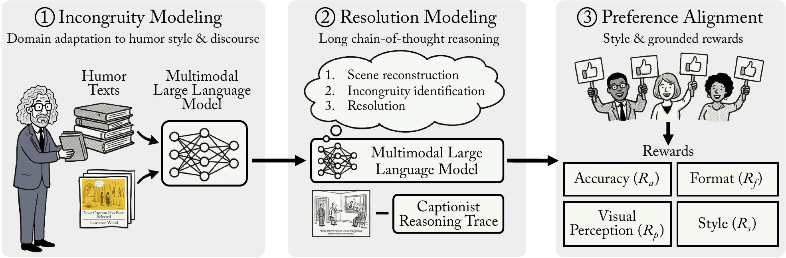
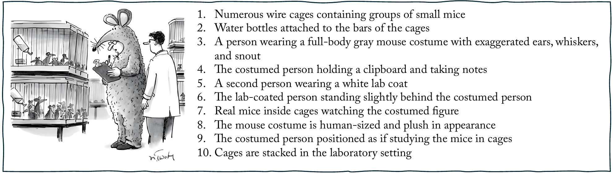
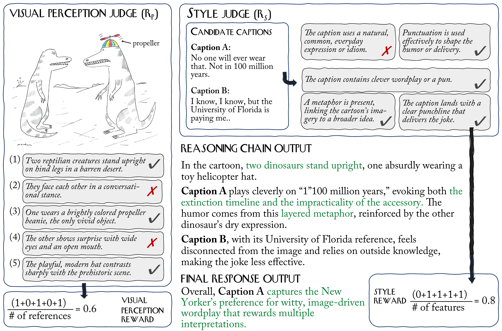
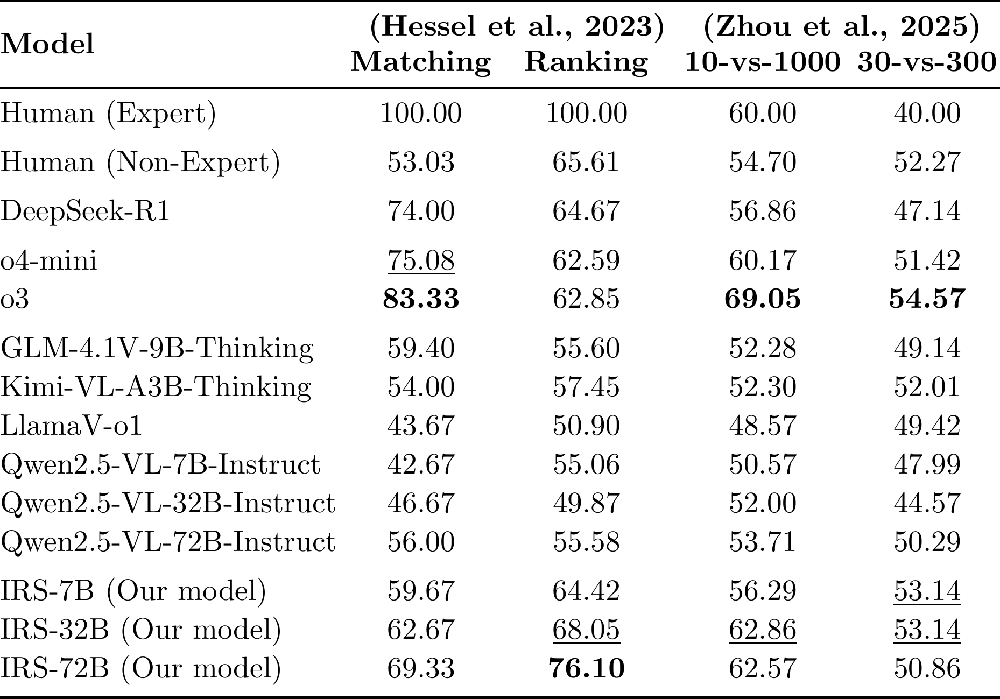

Humor is one of the few cognitive tasks where getting the reasoning right matters as much as getting the answer right. While recent work evaluates humor understanding on benchmarks such as the New Yorker Cartoon Caption Contest (NYCC), it largely treats it as black-box prediction, overlooking the structured reasoning processes underlying humor comprehension. We introduce IRS (Incongruity-Resolution Supervision), a framework that decomposes humor understanding into three components: incongruity modeling, which identifies mismatches in the visual scene; resolution modeling, which constructs coherent reinterpretations of these mismatches; and preference alignment, which evaluates candidate interpretations under human judgments. Grounded in incongruity-resolution theory and expert captionist practice, IRS supervises intermediate reasoning process through structured traces that make the path from visual perception to humorous interpretation explicit and learnable. Across 7B, 32B, and 72B models on NYCC, IRS outperforms strong open and closed multimodal baselines across caption matching and ranking tasks, with our largest model approaching expert-level performance on ranking. Zero-shot transfer to external benchmarks shows that IRS learns generalizable reasoning patterns. Our results suggest that supervising reasoning structure, rather than scale alone, is key for reasoning-centric tasks.
Incongruity Modeling via Domain-Adaptive Pretraining
Recognizing humor-relevant incongruities requires background knowledge that is largely absent from standard pretraining corpora: stylistic conventions of cartoon humor, editorial heuristics for what makes a caption work, and culturally grounded expectations about narrative and visual surprise. In the IM stage, we perform continual pretraining (CPT) on a curated corpus of captionist discussions, editorial analyses, caption-writing guides, and complementary general-knowledge text. CPT biases the model’s representations toward humor-relevant concepts, incongruity-resolution structure, lexical economy, and narrative framing, so that subsequent supervised training can build on a more appropriate prior. Models incorporating this stage exhibit more stable and coherent reasoning during fine-tuning, suggesting that domain adaptation meaningfully shapes what the model attends to rather than merely what it predicts.

The IRS framework consists of three stages: Incongruity Modeling (IM) via domain adaptation, Resolution Modeling (RM) via supervised learning on expert-derived reasoning traces, and Preference Alignment (PA) via reinforcement learning with humor-aware rewards. This structured approach bridges cognitive theory of incongruity-resolution with multimodal learning, moving beyond surface-level pattern matching.
Resolution Modeling via Reasoning Traces
The core of IRS is the supervision of resolution modeling—teaching the model how incongruities are reinterpreted into coherent, humorous readings. We construct a dataset of captionist reasoning traces following a fixed expert-derived template: scene reconstruction, incongruity identification, and narrative resolution. These traces do not treat humor as abstract correctness alone; they attend to how a caption works linguistically—highlighting effective wordplay, metaphor, and punchline placement. Supervised learning on these traces (RM stage) encourages models to internalize structured reasoning processes rather than relying on literal description or pattern matching.

Preference Alignment via Humor-Aware Rewards

Resolution modeling provides structure, but does not ensure visual grounding or stylistic consistency. We address this through preference alignment (PA) using reinforcement learning (RL) with humor-specific rewards. Our composite reward integrates accuracy and format signals with two key humor-specific judges: (1) Visual Perception reward, which ensures reasoning is grounded in salient visual elements and incongruities, and (2) Style reward, which evaluates linguistic quality based on expert guidelines. Conditioning these awards on correctness ensures they reinforce accurate, visually-grounded reasoning.
Quantitative Results

We evaluate Incongruity-Resolution Supervision (IRS) across four benchmark settings spanning caption matching and humor ranking. Across all settings, IRS consistently improves over strong open-weight multimodal baselines and substantially narrows the gap to proprietary models. On standard NYCC matching and ranking tasks, supervising intermediate reasoning via IRS leads to large gains across 7B, 32B, and 72B scales. In particular, our 72B model achieves the strongest open-weight results in our evaluation, approaching expert-level performance on the ranking task where selecting the funnier caption requires subtle discrimination. Harder preference-based benchmarks (10-vs-1000 and 30-vs-300) further highlight the benefits of our approach. These tasks require distinguishing high-quality captions from mediocre ones, a challenge where IRS-trained models show notably better robustness. This indicates that humor understanding benefits from explicitly modeling the incongruity-resolution structure rather than relying on surface correlations. Ablation studies confirm that each stage of IRS—Incongruity Modeling, Resolution Modeling, and Preference Alignment—contributes complementary gains, with the full pipeline consistently achieving the best overall performance across tasks.
Qualitative Results
Beyond accuracy, IRS models produce explanations that closely mirror how expert captionists reason about cartoons. Generated reasoning traces reconstruct the visual scene, explicitly identify the central incongruity, reject implausible interpretations, and justify the final caption choice using concise, image-grounded arguments. Compared to baseline multimodal models, which often rely on generic descriptions or loosely related wordplay, IRS explanations are more selective and editorial in tone. They focus on the single visual or conceptual twist that makes the cartoon funny and articulate why alternative captions fail. On ranking tasks, IRS models favor captions that balance visual fidelity with linguistic economy, matching the New Yorker's editorial style more closely than baselines. These examples illustrate that the framework helps models internalize a reusable reasoning strategy for creative multimodal understanding.
Zero-shot Caption Generation
Our framework's ability to model humor transfers to zero-shot caption generation. IRS-trained models produce plausible, grounded, and humorous captions without being explicitly optimized for open-ended generation tasks. By identifying salient visual incongruities and constructing coherent resolutions, the models generate outputs that capture the spirit of New Yorker-style humor across various themes, from bureaucratic-divine mismatches to magic and role-reversal scenarios. This generalization confirms that supervising the underlying reasoning mechanism is key for creative multimodal tasks.
Limitations
Despite these gains, our approach has several limitations. First, humor remains inherently subjective and culturally situated. While our model aligns better with New Yorker-style humor, it may not generalize to other comedic traditions or cultural contexts without additional adaptation. Second, the framework depends on curated reasoning traces and judge-based reward models, which introduce annotation and modeling overhead. Although we use lightweight supervision, scaling this approach to entirely new creative domains would require comparable domain expertise. Third, visual perception errors can still propagate into reasoning. When the model misidentifies key visual elements, even well-structured reasoning may justify an incorrect interpretation. Finally, reinforcement learning with LLM-as-judge rewards, while effective, inherits the biases and limitations of the judging models themselves. Addressing these limitations will require broader cultural coverage, more robust visual grounding, and improved reward modeling for subjective reasoning tasks.